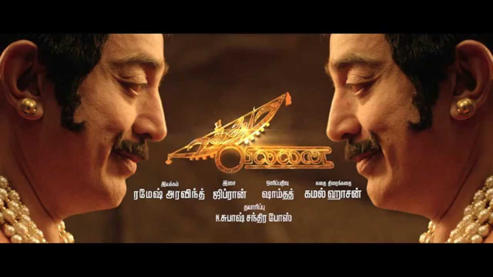
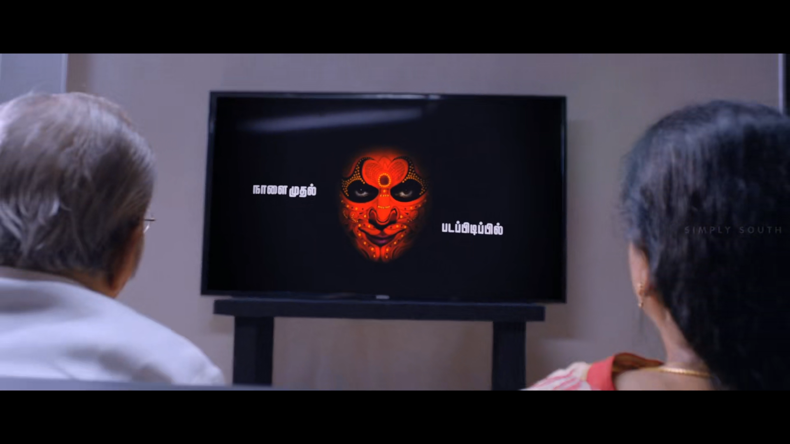

UTTAMAVILLAIN
We are all familiar with Kamal Hassan as a screenwriter and director. Movies written and directed by Kamal Hassan include "Virumandi," "Hey Ram," and "Vishwaroopam 1 & 2." We were able to see Kamal Hassan as an artist through these films. These films established numerous milestones in the film industry.
Kamal is remarkable because of his writing process and the way he narrates a scene to the audience. His writing was also prominent. A list of Kamal Hassan's films is available. His films, such as "Anbe Sivam," "Hey Ram," and "Thevar Magan," among others, contain many more elements hidden within his writing. "Uttama Villain" is one of them.
Uttama Villain is a film directed by Ramesh Aravind and written by Kamal Hassan. In prominent roles are Kamal Hassan, K. Viswanath, K. Balachander, Jayaram, Andrea Jeremiah, Pooja Kumar, Nassar, Parvathy Thiruvothu, and Urvashi.
The film begins with hand applause after the title card of the film "UTTAMA VILLAIN," which was a kind of appreciation to the artist. The next scene will begin with a theatre
projector, followed by an overhead shot and tracking. It passes through all of the audiences and ends at the theatre screen, where the name MANORANJAN, an artist, will be displayed.
The audience applause grows, and everyone enjoys the star Manoranjan. Following this, a song from Manoranjan's film will be played on the theatre screen, defining Manoranjan as a
romantic hero as well as his stardom, which everyone enjoys. His family will be shown inside the theatre in the following scene. His wife, mother-in-law, and son are all present.
When Manoranjan enters the theatre, his son walks out, indicating a dislike for his father and his profession. And for the next few scenes, Jayaram will be shown constantly, making
his character mysterious and also justifying that there will be a conversation between Manoranjan and Jayaram, defining a connection between them.
An interview with Manoranjan will be shown in the following scene. In that interview, the anchor will ask Manoranjan about his career. In the beginning, he made more films with his
mentor Margadharshi, all of which were classics and also a hit. But that hasn't made Manoranjan a celebrity. Following that, he signed a project in the production of his current father-in-law,
which was a huge hit and catapulted Manoranjan to stardom. The anchor then asks another question, "Did you love cinema or his current wife "Varalakshmi" when you were first starting out as a star?"
In response to that question, Manoranjan turns his gaze to Jayaram, who is sitting in the audience at that show. And a gentle bgm titled "Letter to Yamini" begins, with Jayaram telling about Manoranjan's
old lover, who was about to marry Manoranjan. She is now Jayaram's wife. Also, inform Manoranjan about his daughter, whom Yamini had before marrying Jayaram. Then tell her about her last wish, which was to
introduce her daughter to her biological father, Manoranjan.
After that, we can divide the film Uttama Villain into two parts. The first is the star Manoranjan, who wanted to work on films with his father-in-law, and the second is after he realised he only has a limited
time in this world after being diagnosed with a brain tumour. So, in the next scene, he will abandon all of his projects in order to make a film with his mentor, guru Margadharshi. So, if you pay attention, that
scene begins inside his house and progresses out of his house during the conversation. When Manoranjan leaves, his son will be sitting outside the house on a sofa, watching something, and Manoranjan will stare at
him for a few moments before moving on. This demonstrates his son's negative attitude toward Manoranjan. Then he meets his mentor, and the two decide to collaborate on a film called "Uttama Villain." 
Then the pooja for the film "Uttama Villain" begins, and the director Margadharshi begins narrating the story to Pooja Kumar, the film's actress. Then there will be a smooth transition to the film's story. In that story,
Manoranjan will be portrayed as an artist who plays various roles from ancient stories. In that story, the character played by Manoranjan as Uttaman is portrayed as a mrithyunjayan. That is, he will be bitten by a snake,
attacked by a crocodile, fall from waterfalls, attacked by a tiger, and so on throughout the story, but none of this will affect his life and he will not be killed. After that, he will be known as Mruthynjayan. It's exactly
the opposite of Manoranjan's real life. The character Uttaman and the story Uttama Villain are both based on actor Manoranjan's real life.
Manoranjan's real life resumes in the following scene. Where he is expecting his daughter Manonmani. Manoranjan is standing next to a photo frame that is hung on the wall. Which is a lady in her make-up. .png) So, in my opinion,
Manoranjan's life was someone else's play that he performed without his consent. And they will both have a conversation in which they will both express their point of view. After that, they all learned that Manoranjan was a
dying patient. In the interval shot, Manoranjan will be dressed as Uttaman, standing in front of a pond, where a fisherman crosses him with fish in his basket. Both Manoranjan and the fish in the basket are in the same situation
where they are fighting for their lives. And the intermission shot concludes with Manoranjan whipping blood from his nose, with the song "Mrithyunja jaya jaya" playing in the background. Manoranjan, I believe, has to be Uttaman
for a while because he has some responsibilities to fulfil.
So, in my opinion,
Manoranjan's life was someone else's play that he performed without his consent. And they will both have a conversation in which they will both express their point of view. After that, they all learned that Manoranjan was a
dying patient. In the interval shot, Manoranjan will be dressed as Uttaman, standing in front of a pond, where a fisherman crosses him with fish in his basket. Both Manoranjan and the fish in the basket are in the same situation
where they are fighting for their lives. And the intermission shot concludes with Manoranjan whipping blood from his nose, with the song "Mrithyunja jaya jaya" playing in the background. Manoranjan, I believe, has to be Uttaman
for a while because he has some responsibilities to fulfil.
And now for one of my favourite Uttama Villain scenes. It could be titled "Letter from Yamini," and it's where Soku confesses to Manoranjan about his role in separating Manoranjan and Yamini. And he reads Manoranjan's letter. If you
look closely, you'll notice that Soku will be dressed in white and Manoranjan will be dressed in black. Also, in the staging, Soku reads the letter with the Uttama Villain title card as the backdrop, with Soku standing near Uttaman and
Manoranjan in place of the villain. Soku and Manoranjan are both looking at each other. Throughout Manoranjan's life, Soku was a clean and perfect man, according to what I understood. Manoranjan had no idea what Soku and his father-in-law
had done to him. He perceived himself to be a villain or a bad person. You can also see that in one scene, a red light covers Manoranjan's tip of the nose. It has the appearance of a joker. .png) He was a prankster to his father-in-law, Soku, for
his wife, son, and everyone else. For them, he was just a pet. Throughout the scene, Gibhran's music takes precedence. The music begins with the line "kadhalal ee kadidham." And within that music, there are many layers that define each emotion
of Manoranjan. The intensity of the music increases as the reading progresses, defining what is going on in Manoranjan's mind. And the staging is set up so that Soku and Manoranjan are face to face, with Dr. Aparna sitting in the middle of them.
Only Soku is aware of the entire story in this location. Finally, Soku apologises to Manoranjan for his actions.
He was a prankster to his father-in-law, Soku, for
his wife, son, and everyone else. For them, he was just a pet. Throughout the scene, Gibhran's music takes precedence. The music begins with the line "kadhalal ee kadidham." And within that music, there are many layers that define each emotion
of Manoranjan. The intensity of the music increases as the reading progresses, defining what is going on in Manoranjan's mind. And the staging is set up so that Soku and Manoranjan are face to face, with Dr. Aparna sitting in the middle of them.
Only Soku is aware of the entire story in this location. Finally, Soku apologises to Manoranjan for his actions. .png) Manoranjan and Margadharshi approach Poorna Chandra Rao in the following scene to discuss Manoranjan's illness. His son will be playing cricket while Manoranjan arrives. Manoranjan waves his hand at his son, but his son bursts out in a show of disrespect
to his father. He believes that his father will divorce her mother for other woman. As a result, he considers his father to be a villain in his life. This will be reflected in the way he behaves. And I like how Manoranjan tells his son about his illness.
I don't believe there were any scenes in which they were staged face to face and spoke constantly, and I don't believe there were any scenes that specified a father-son relationship bond between both of them. So, as Manoranjan delves deeper into his disease
and problem, his son's attitude and modulation shifts, indicating a newfound respect for his father. And now comes the relationship between a father and a son, with their deep conversations.
Manoranjan and Margadharshi approach Poorna Chandra Rao in the following scene to discuss Manoranjan's illness. His son will be playing cricket while Manoranjan arrives. Manoranjan waves his hand at his son, but his son bursts out in a show of disrespect
to his father. He believes that his father will divorce her mother for other woman. As a result, he considers his father to be a villain in his life. This will be reflected in the way he behaves. And I like how Manoranjan tells his son about his illness.
I don't believe there were any scenes in which they were staged face to face and spoke constantly, and I don't believe there were any scenes that specified a father-son relationship bond between both of them. So, as Manoranjan delves deeper into his disease
and problem, his son's attitude and modulation shifts, indicating a newfound respect for his father. And now comes the relationship between a father and a son, with their deep conversations. .png) Manohar discusses his ambition to become a screenwriter in order to
show his father as an artist. As I previously stated, Manohar despises his father's celebrity. He is the type of audience who dislikes his father's exaggeration and unwanted behaviour on the screen. He had always wished for his father to be an artist rather than
a celebrity. As a result, he wishes to write a good storey in order to make his father a good artist. And the bgm of an actor's rise begins, and it continues to specify the relationship between them as well as the life of an actor.
Manohar discusses his ambition to become a screenwriter in order to
show his father as an artist. As I previously stated, Manohar despises his father's celebrity. He is the type of audience who dislikes his father's exaggeration and unwanted behaviour on the screen. He had always wished for his father to be an artist rather than
a celebrity. As a result, he wishes to write a good storey in order to make his father a good artist. And the bgm of an actor's rise begins, and it continues to specify the relationship between them as well as the life of an actor.
The second one, "Letter from Manoranjan to Yamini," begins with Manoranjan sitting in front of a mirror to remove his makeup. He is currently playing Hiranya Kashyapu, the villain. While Manoranjan is removing his makeup, Manonmani begins reading the letter, and the
music for Gibhran's Letter to Yamini begins. .png) At some point, both Manohar's and Manonmani's faces will be merged, like half Manohar's and half Manonmani's faces. In a single image, I could see Manoranjan's emotions. His wants, his life, everything. It felt like a shiva-parvathy
mix of Yamini and Manoranjan. And she finishes the letter. She realised who her father was after reading that letter. She was polite to her father before reading the letter. It was merely a gesture of sympathy for a dying patient. That's why Manoranjan was shown in Hiranya Kashyabu's
role at the start, and after finishing the letter, Manoranjan had removed all of his make-up and his face was clear. As a result, she made a favourable impression on her father, and he became a hero to her. The staging was similar to that of the "Letter from Yamini" scene.
At some point, both Manohar's and Manonmani's faces will be merged, like half Manohar's and half Manonmani's faces. In a single image, I could see Manoranjan's emotions. His wants, his life, everything. It felt like a shiva-parvathy
mix of Yamini and Manoranjan. And she finishes the letter. She realised who her father was after reading that letter. She was polite to her father before reading the letter. It was merely a gesture of sympathy for a dying patient. That's why Manoranjan was shown in Hiranya Kashyabu's
role at the start, and after finishing the letter, Manoranjan had removed all of his make-up and his face was clear. As a result, she made a favourable impression on her father, and he became a hero to her. The staging was similar to that of the "Letter from Yamini" scene.
Towards the end of the film, after Manoranjan has finished it, he will collapse because it is his final moments. As a result, he sees Narasimha's shadow dancing on the screen because he is playing Hiranya Kashyapu, a villain who will be killed by Narasimha. As a result, that particular
shadow depicts him facing his death.
The body of Manoranjan will be shown through the transparent glass in the ICU door at the climax. Then there will be a transition from the same scene to black and white, and instead of the transparent glass, a projector will be shown, and as in the beginning, there will be an overhead shot
tracking along the audience and reaching the theatre screen, where everything audience, projector, and theatre will be in black and white, but the video displayed on the screen will be in colour. Manoranjan's character as king could be seen here. So that scene depicts how, while the audience's
perspective and tastes change, an artist's abilities remain constant. .png)